hill_inh <- function(X, X_th, n) 1 / (1 + (X / X_th)^n) # inhibitory Hill function
# toggle switch: Y represses X, X represses Y
derivs_ts <- function(t, Xs) {
X <- Xs[1]; Y <- Xs[2]
dxdt <- 5 + 50 * hill_inh(Y, 100, 4) - 0.1 * X
dydt <- 4 + 40 * hill_inh(X, 150, 4) - 0.12 * Y
c(dxdt, dydt)
}3A. Nullclines
Part 3 generalizes the single-variable methods of Part 2 to systems of two coupled ODEs, using a two-gene circuit as the running example. The main new tool is phase-plane analysis (Strogatz 2015), a visual way to characterize a nonlinear system by plotting its state in the plane of its two variables.
We model the genetic toggle switch from Part 2A (Equation (13)): two genes \(X\) and \(Y\) that each repress the other (Gardner et al. 2000), with dynamics
\[ \begin{cases} \dfrac{dX}{dt} = g_{X0} + g_{X1}\dfrac{1}{1 + (Y/Y_{th})^{n_Y}} - k_X X \\[2mm] \dfrac{dY}{dt} = g_{Y0} + g_{Y1}\dfrac{1}{1 + (X/X_{th})^{n_X}} - k_Y Y \end{cases} \]
For illustration the kinetic parameters are fixed in the code (\(g_{X0}=5, g_{X1}=50, Y_{th}=100, n_Y=4, k_X=0.1\) and \(g_{Y0}=4, g_{Y1}=40, X_{th}=150, n_X=4, k_Y=0.12\)).
3A.1 ODE simulation
To integrate a multi-variable system we generalize the fourth-order Runge-Kutta method of Part 2B so that the state \(X\) and each stage \(k_i\) are vectors rather than scalars; the algorithm is otherwise identical. Simulating from ten random initial conditions, every trajectory settles on one of two distinct stable steady states (different levels of \(X\) and \(Y\)), the hallmark of the toggle switch’s bistability.
NoteRecipe 3A.1.1
Objective. Simulate a genetic toggle switch from many initial conditions and see which steady states the trajectories reach.
Model. Genes X and Y repress each other; each gene’s transcription is a basal rate plus a repressive Hill function of the other, with linear degradation: dX/dt = gX0 + gX1/(1 + (Y/Yth)^nY) - kX*X, dY/dt = gY0 + gY1/(1 + (X/Xth)^nX) - kY*Y.
Method. A vector form of RK4, with the state and each stage carried as 2-vectors.
Test. gX0=5, gX1=50, Yth=100, nY=4, kX=0.1; gY0=4, gY1=40, Xth=150, nX=4, kY=0.12; ten random initial (X, Y) in [0, 600].
Show. A phase-plane plot of the ten trajectories converging to the two stable steady states.
Verification. Every trajectory settles on one of two distinct stable steady states (different X and Y levels), showing the switch is bistable.
R implementation
# RK4 for a generic multi-variable system (the vector version of Part 2B's RK4)
RK4_generic <- function(derivs, X0, t.total, dt, ...) {
t_all <- seq(0, t.total, by = dt)
n_all <- length(t_all)
X_all <- matrix(0, nrow = n_all, ncol = length(X0))
X_all[1, ] <- X0
for (i in 1:(n_all - 1)) {
t0 <- t_all[i]
k1 <- dt * derivs(t0, X_all[i, ], ...)
k2 <- dt * derivs(t0 + dt / 2, X_all[i, ] + k1 / 2, ...)
k3 <- dt * derivs(t0 + dt / 2, X_all[i, ] + k2 / 2, ...)
k4 <- dt * derivs(t0 + dt, X_all[i, ] + k3, ...)
X_all[i + 1, ] <- X_all[i, ] + (k1 + 2 * k2 + 2 * k3 + k4) / 6
}
cbind(t_all, X_all)
}
set.seed(77) # reproducible random starts
X_init_all <- matrix(runif(20, 0, 600), ncol = 2) # 10 random (X, Y) initial conditions
t.total <- 100; dt <- 0.01
plot(NULL, xlab = "t (Minute)", ylab = "Levels (nM)", xlim = c(0, 80), ylim = c(0, 650))
for (i in seq_len(nrow(X_init_all))) {
res <- RK4_generic(derivs_ts, X_init_all[i, ], t.total, dt)
lines(res[, 1], res[, 2], col = 1) # X(t)
lines(res[, 1], res[, 3], col = 2) # Y(t)
}
legend("top", inset = 0.02, legend = c("X", "Y"), col = 1:2, lty = 1, cex = 0.8)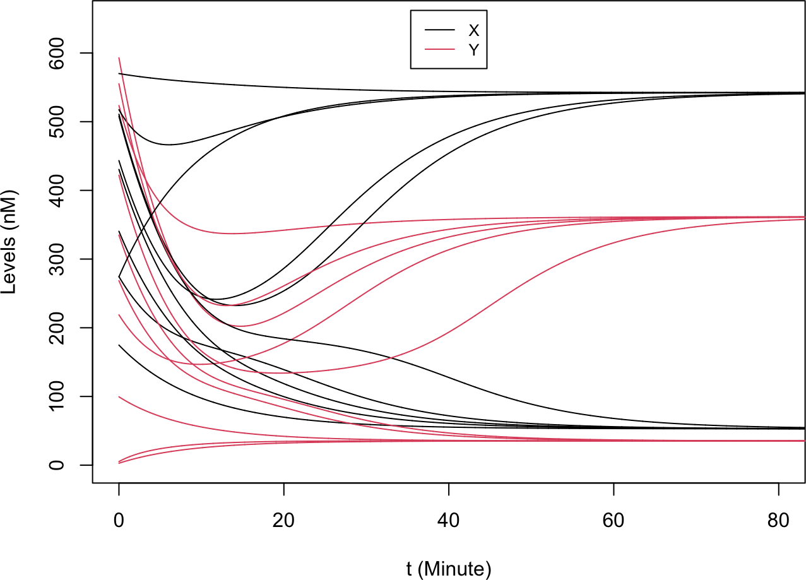
Python implementation
import numpy as np
import matplotlib.pyplot as plt
def hill_inh(X, X_th, n): # inhibitory Hill function
return 1 / (1 + (X / X_th)**n)
# toggle switch: Y represses X, X represses Y
def derivs_ts(t, Xs):
X, Y = Xs
dxdt = 5 + 50 * hill_inh(Y, 100, 4) - 0.1 * X
dydt = 4 + 40 * hill_inh(X, 150, 4) - 0.12 * Y
return [dxdt, dydt]# RK4 for a generic multi-variable system (the vector version of Part 2B's RK4)
def RK4_generic(derivs, X0, t_total, dt, **kwargs):
t_all = np.arange(0, t_total + dt, dt)
n_all = len(t_all)
X_all = np.zeros((n_all, len(X0)))
X_all[0, :] = X0
for i in range(n_all - 1):
t0 = t_all[i]
k1 = dt * np.array(derivs(t0, X_all[i, :], **kwargs))
k2 = dt * np.array(derivs(t0 + dt / 2, X_all[i, :] + k1 / 2, **kwargs))
k3 = dt * np.array(derivs(t0 + dt / 2, X_all[i, :] + k2 / 2, **kwargs))
k4 = dt * np.array(derivs(t0 + dt, X_all[i, :] + k3, **kwargs))
X_all[i + 1, :] = X_all[i, :] + (k1 + 2 * k2 + 2 * k3 + k4) / 6
return np.column_stack((t_all, X_all))
np.random.seed(77) # reproducible random starts
X_init_all = np.random.uniform(0, 600, (10, 2)) # 10 random (X, Y) initial conditions
t_total, dt = 100, 0.01
plt.xlabel("t (Minute)"); plt.ylabel("Levels (nM)")
plt.xlim(0, 80); plt.ylim(0, 650)(0.0, 80.0)
(0.0, 650.0)for i in range(X_init_all.shape[0]):
res = RK4_generic(derivs_ts, X_init_all[i, :], t_total, dt)
plt.plot(res[:, 0], res[:, 1], color="black", label="X" if i == 0 else "")
plt.plot(res[:, 0], res[:, 2], color="red", label="Y" if i == 0 else "")
plt.legend(loc="upper right", fontsize=8); plt.show()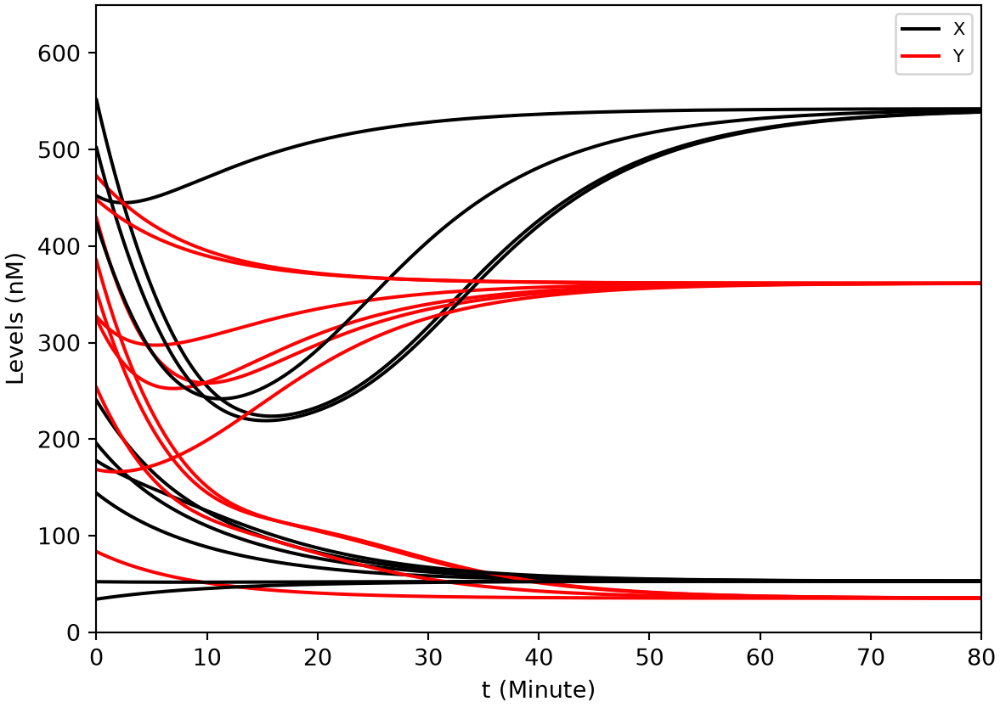
3A.2 Phase plane
The phase plane describes the system by two axes, here the levels of \(X\) and \(Y\); each state is a point and each trajectory a curve. Replotting the same ten simulations in the \((X, Y)\) plane shows the trajectories flowing into two attractors, confirming the two stable steady states.
R implementation
plot(NULL, xlab = "X (nM)", ylab = "Y (nM)", xlim = c(0, 600), ylim = c(0, 650))
for (i in seq_len(nrow(X_init_all))) {
res <- RK4_generic(derivs_ts, X_init_all[i, ], t.total, dt)
lines(res[, 2], res[, 3], col = 1) # trajectory in the (X, Y) plane
}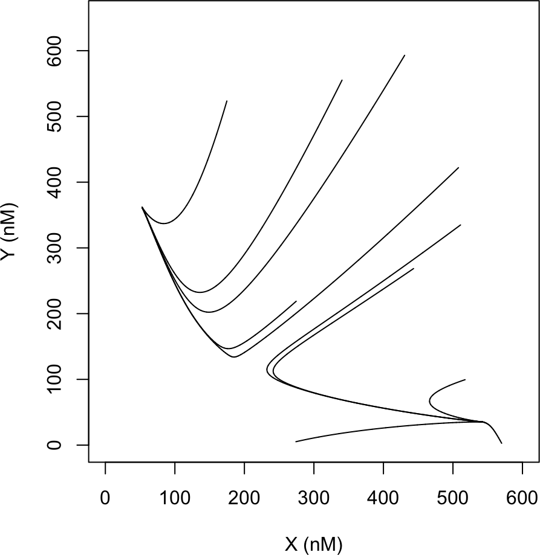
Python implementation
plt.xlabel("X (nM)"); plt.ylabel("Y (nM)")
plt.xlim(0, 600); plt.ylim(0, 650)(0.0, 600.0)
(0.0, 650.0)for i in range(X_init_all.shape[0]):
res = RK4_generic(derivs_ts, X_init_all[i, :], t_total, dt)
plt.plot(res[:, 1], res[:, 2], color="black") # trajectory in the (X, Y) plane
plt.show()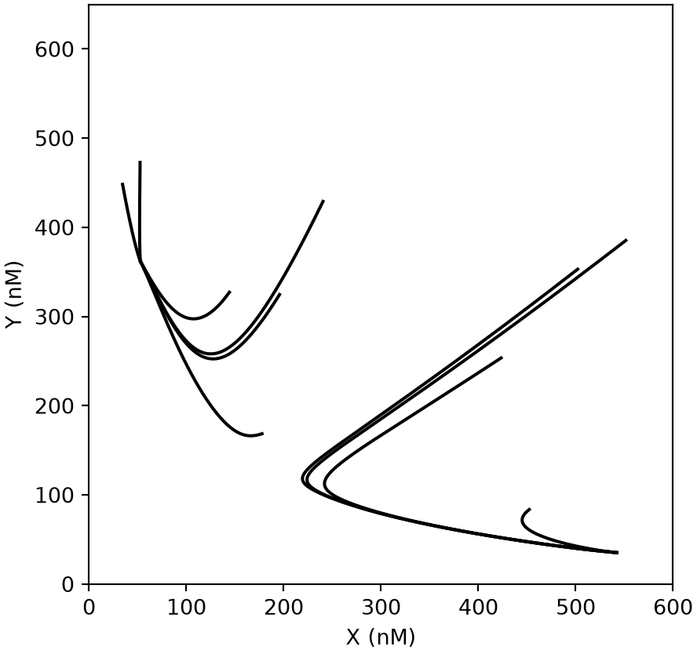
3A.3 Vector field
At each point of the phase plane the derivative \((V_X, V_Y) = (dX/dt, dY/dt)\) gives the local direction and speed of motion. Drawing these as arrows on a grid produces the vector field. The arrows point toward the two stable states; a third steady state sits between them, where nearby arrows point in from one direction and out along another. That is a saddle point, an unstable steady state. Normalizing the arrows to unit length highlights the directions without the speed.
R implementation
# vector field: the derivative (dX/dt, dY/dt) as an arrow at each grid point
library(ggplot2)
grid <- expand.grid(X = seq(0, 600, 20), Y = seq(0, 650, 20))
vf <- t(apply(grid, 1, function(Xs) c(Xs, derivs_ts(0, Xs))))
vf <- as.data.frame(vf); colnames(vf) <- c("X", "Y", "dX", "dY")
ggplot(vf, aes(X, Y)) +
geom_segment(aes(xend = X + dX, yend = Y + dY),
arrow = arrow(length = unit(0.05, "in"))) +
coord_fixed() # equal X/Y scale: a square phase plane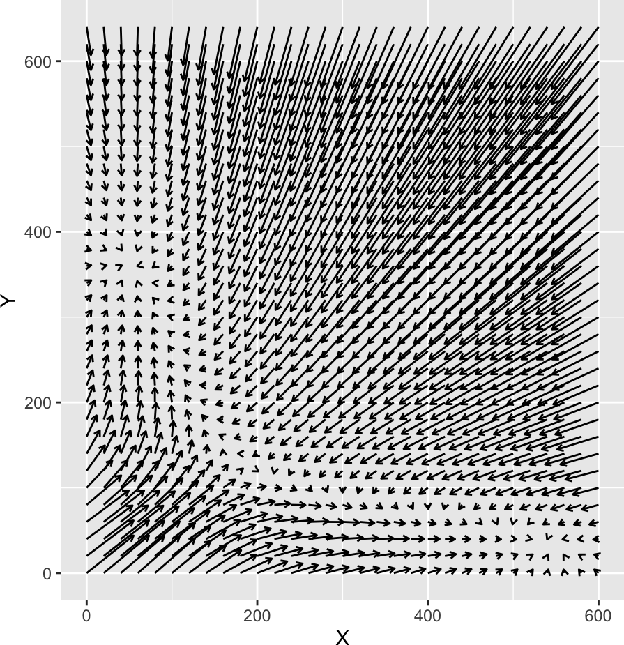
# unit vectors: same directions, normalized to a fixed length
vfu <- t(apply(grid, 1, function(Xs) {
v <- derivs_ts(0, Xs)
c(Xs, v / sqrt(sum(v^2)))
}))
vfu <- as.data.frame(vfu); colnames(vfu) <- c("X", "Y", "dX", "dY")
p_field <- ggplot(vfu, aes(X, Y)) +
geom_segment(aes(xend = X + 15 * dX, yend = Y + 15 * dY),
arrow = arrow(length = unit(0.05, "in"))) +
coord_fixed() # equal X/Y scale: a square phase plane
p_field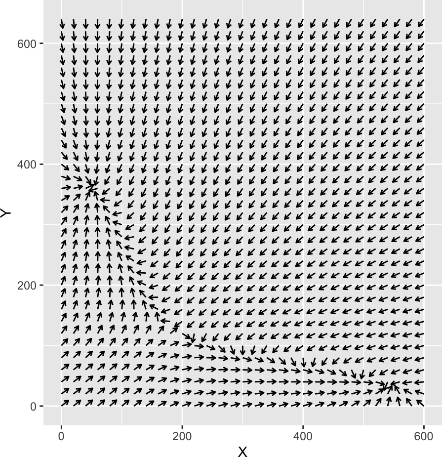
Python implementation
# vector field: the derivative (dX/dt, dY/dt) as an arrow at each grid point
X_all = np.arange(0, 601, 20)
Y_all = np.arange(0, 651, 20)
grid = np.array(np.meshgrid(X_all, Y_all)).T.reshape(-1, 2) # all (X, Y) combinations
for X, Y in grid:
dX, dY = derivs_ts(0, (X, Y))
plt.arrow(X, Y, dX, dY, head_width=8, head_length=8, ec="black")
plt.gca().set_aspect("equal") # equal X/Y scale: a square phase plane
plt.xlabel("X"); plt.ylabel("Y"); plt.show()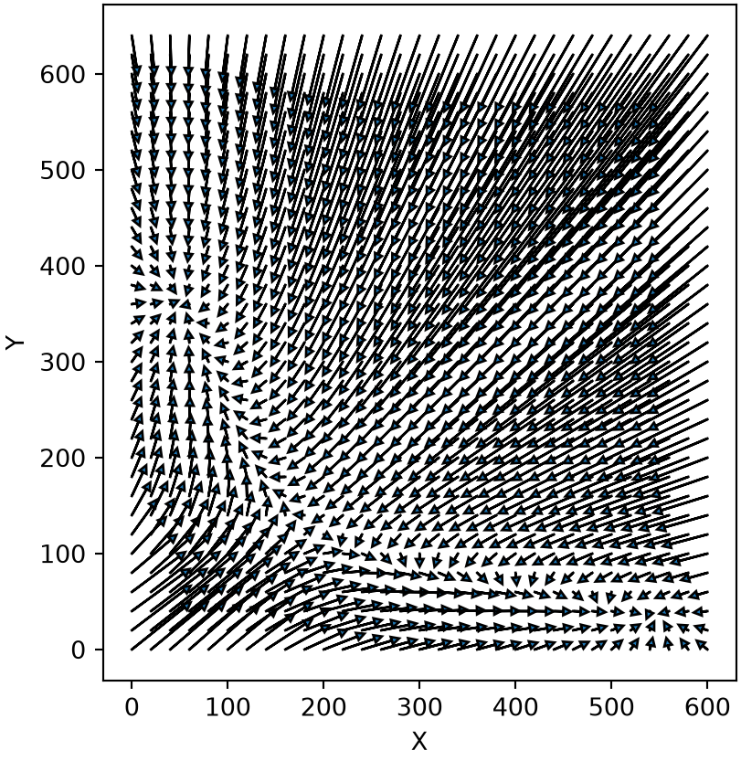
# unit vectors: same directions, normalized to a fixed length
def unit_arrow(X, Y, scale=15):
dX, dY = derivs_ts(0, (X, Y))
norm = np.sqrt(dX**2 + dY**2)
return scale * dX / norm, scale * dY / norm
for X, Y in grid:
dX, dY = unit_arrow(X, Y)
plt.arrow(X, Y, dX, dY, head_width=8, head_length=8, ec="black")
plt.gca().set_aspect("equal") # equal X/Y scale: a square phase plane
plt.xlabel("X"); plt.ylabel("Y"); plt.show()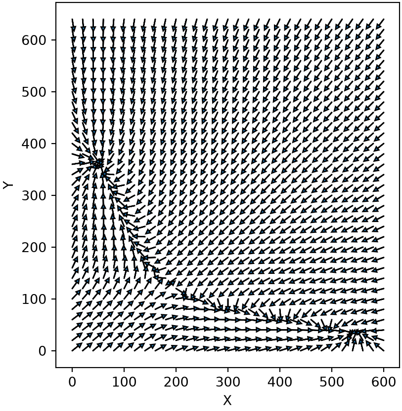
3A.4 Nullclines: separation of variables
A nullcline is the curve on which one derivative vanishes: the X-nullcline is \(dX/dt = 0\) and the Y-nullcline is \(dY/dt = 0\). Where the two nullclines cross, both derivatives are zero, so the intersections are exactly the steady states, and counting them reveals the multistability at a glance.
\[ f_X(X, Y) = g_{X0} + g_{X1}\frac{1}{1 + (Y/Y_{th})^{n_Y}} - k_X X = 0 \tag{1} \]
\[ f_Y(X, Y) = g_{Y0} + g_{Y1}\frac{1}{1 + (X/X_{th})^{n_X}} - k_Y Y = 0 \tag{2} \]
For this circuit each nullcline can be solved analytically by separation of variables: rearranging Equation (1) for \(X\) and Equation (2) for \(Y\),
\[ \begin{aligned} X(Y) &= \frac{g_{X0} + g_{X1}\dfrac{1}{1 + (Y/Y_{th})^{n_Y}}}{k_X} , \\[2mm] Y(X) &= \frac{g_{Y0} + g_{Y1}\dfrac{1}{1 + (X/X_{th})^{n_X}}}{k_Y} . \end{aligned} \tag{3} \]
Sweeping \(Y\) (or \(X\)) then traces each nullcline directly. Overlaid on the unit vector field, the two nullclines cross three times: the outer two crossings are the stable states and the middle one is the saddle. Separation of variables is the easiest route whenever it is available, but it fails for most systems, so the next two sections give general numerical alternatives.
NoteRecipe 3A.4.1
Objective. Draw the X- and Y-nullclines of the toggle switch, whose intersections are the steady states.
Model. Genes X and Y repress each other; each gene’s transcription is a basal rate plus a repressive Hill function of the other, with linear degradation: dX/dt = gX0 + gX1/(1 + (Y/Yth)^nY) - kX*X, dY/dt = gY0 + gY1/(1 + (X/Xth)^nX) - kY*Y.
Method. Solve each nullcline analytically by separation of variables: rearrange fX(X,Y) = 0 for X and fY(X,Y) = 0 for Y, sweeping the other variable.
Test. The toggle switch with gX0 = 5, gX1 = 50, Yth = 100, nY = 4, kX = 0.1; gY0 = 4, gY1 = 40, Xth = 150, nX = 4, kY = 0.12.
Show. A phase-plane plot of the X- and Y-nullclines with their three crossings.
Verification. The two nullclines cross three times, matching the two stable steady states and one unstable state seen by simulation.
R implementation
nullcline1 <- function(Y) cbind(X = (5 + 50 * hill_inh(Y, 100, 4)) / 0.1, Y = Y) # dX/dt = 0
nullcline2 <- function(X) cbind(X = X, Y = (4 + 40 * hill_inh(X, 150, 4)) / 0.12) # dY/dt = 0
null1 <- as.data.frame(nullcline1(seq(0, 650, 1)))
null2 <- as.data.frame(nullcline2(seq(0, 600, 1)))
p_field +
geom_path(data = null1, aes(X, Y, colour = "dX/dt=0"), linewidth = 1) +
geom_path(data = null2, aes(X, Y, colour = "dY/dt=0"), linewidth = 1) +
labs(colour = NULL) +
theme(legend.position = c(0.99, 0.99), legend.justification = c(1, 1),
legend.background = element_rect(fill = "white", colour = "grey80"))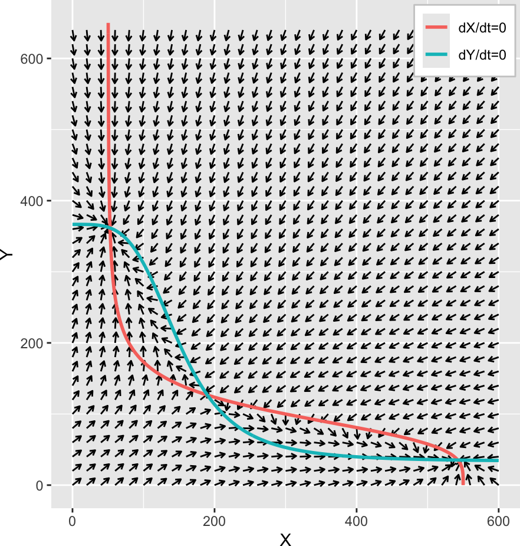
Python implementation
def nullcline1(Y): # dX/dt = 0
return np.column_stack(((5 + 50 * hill_inh(Y, 100, 4)) / 0.1, Y))
def nullcline2(X): # dY/dt = 0
return np.column_stack((X, (4 + 40 * hill_inh(X, 150, 4)) / 0.12))
null1 = nullcline1(np.arange(0, 651, 1))
null2 = nullcline2(np.arange(0, 601, 1))
for X, Y in grid: # unit vector field
dX, dY = unit_arrow(X, Y)
plt.arrow(X, Y, dX, dY, head_width=8, head_length=8, ec="black")
plt.plot(null1[:, 0], null1[:, 1], color="red", lw=2, label="dX/dt=0")
plt.plot(null2[:, 0], null2[:, 1], color="blue", lw=2, label="dY/dt=0")
plt.gca().set_aspect("equal") # equal X/Y scale: a square phase plane
plt.xlabel("X"); plt.ylabel("Y"); plt.legend(loc="upper right"); plt.show()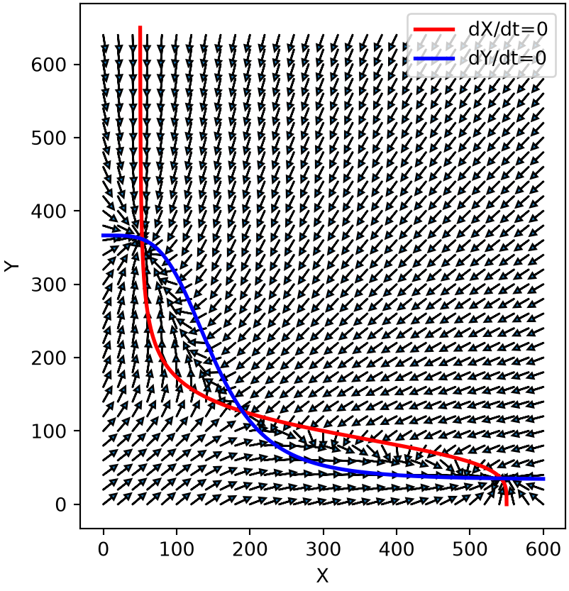
3A.5 Contour method
When separation of variables is not possible, the nullcline \(f_X(X, Y) = 0\) is just the zero-level contour of the surface \(Z = f_X(X, Y)\), exactly as in Part 2F. Evaluating \(f_X\) and \(f_Y\) on a grid and drawing their \(Z = 0\) contours recovers both nullclines. The method is robust as long as the grid is fine enough for the contour routine to interpolate, though a fine grid over two dimensions can be costly.
NoteRecipe 3A.5.1
Objective. Draw the nullclines with a general method that does not need separation of variables.
Model. Genes X and Y repress each other; each gene’s transcription is a basal rate plus a repressive Hill function of the other, with linear degradation: dX/dt = gX0 + gX1/(1 + (Y/Yth)^nY) - kX*X, dY/dt = gY0 + gY1/(1 + (X/Xth)^nX) - kY*Y.
Method. Treat each nullcline as the zero-level contour of the surface Z = fX(X,Y) (and Z = fY(X,Y)), evaluated on a grid and traced by a contour routine.
Test. The toggle switch (gX0 = 5, gX1 = 50, Yth = 100, nY = 4, kX = 0.1; gY0 = 4, gY1 = 40, Xth = 150, nX = 4, kY = 0.12) on a grid over the (X, Y) plane.
Show. A phase-plane plot of the nullclines drawn as zero contours, with their crossings.
Verification. The zero contours reproduce the same nullclines as separation of variables, and their crossings match the steady states.
R implementation
X_all <- seq(0, 600, 10); Y_all <- seq(0, 650, 10)
z_X <- outer(X_all, Y_all, function(X, Y) 5 + 50 * hill_inh(Y, 100, 4) - 0.1 * X)
z_Y <- outer(X_all, Y_all, function(X, Y) 4 + 40 * hill_inh(X, 150, 4) - 0.12 * Y)
contour(X_all, Y_all, z_X, levels = 0, col = 2, xlab = "X", ylab = "Y", drawlabels = FALSE)
contour(X_all, Y_all, z_Y, levels = 0, col = 4, add = TRUE, drawlabels = FALSE)
legend("topright", inset = 0.02, legend = c("dX/dt=0", "dY/dt=0"), col = c(2, 4), lty = 1, cex = 0.8)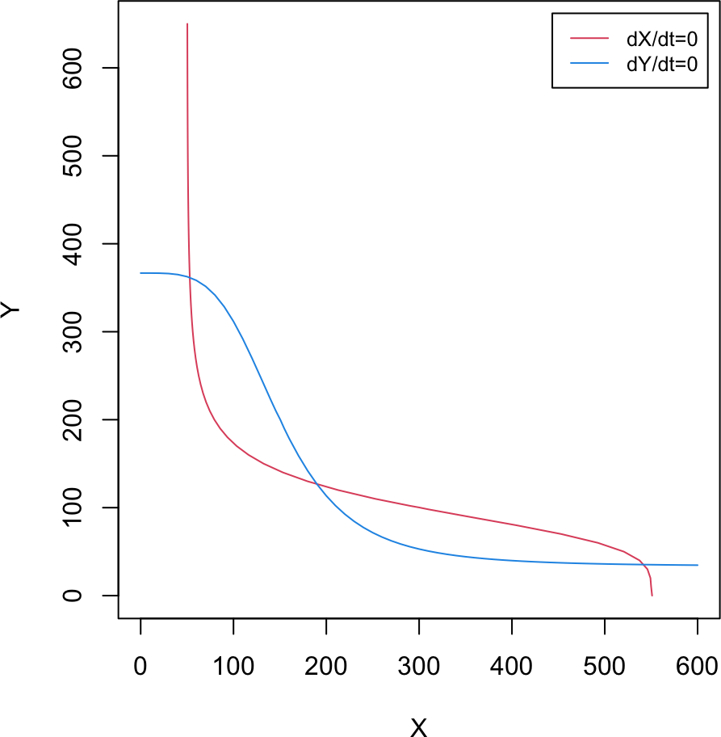
Python implementation
X_all = np.arange(0, 601, 10); Y_all = np.arange(0, 651, 10)
Xg, Yg = np.meshgrid(X_all, Y_all)
z_X = 5 + 50 * hill_inh(Yg, 100, 4) - 0.1 * Xg
z_Y = 4 + 40 * hill_inh(Xg, 150, 4) - 0.12 * Yg
plt.contour(X_all, Y_all, z_X, levels=[0], colors="red")
plt.contour(X_all, Y_all, z_Y, levels=[0], colors="blue")
plt.xlabel("X"); plt.ylabel("Y"); plt.show()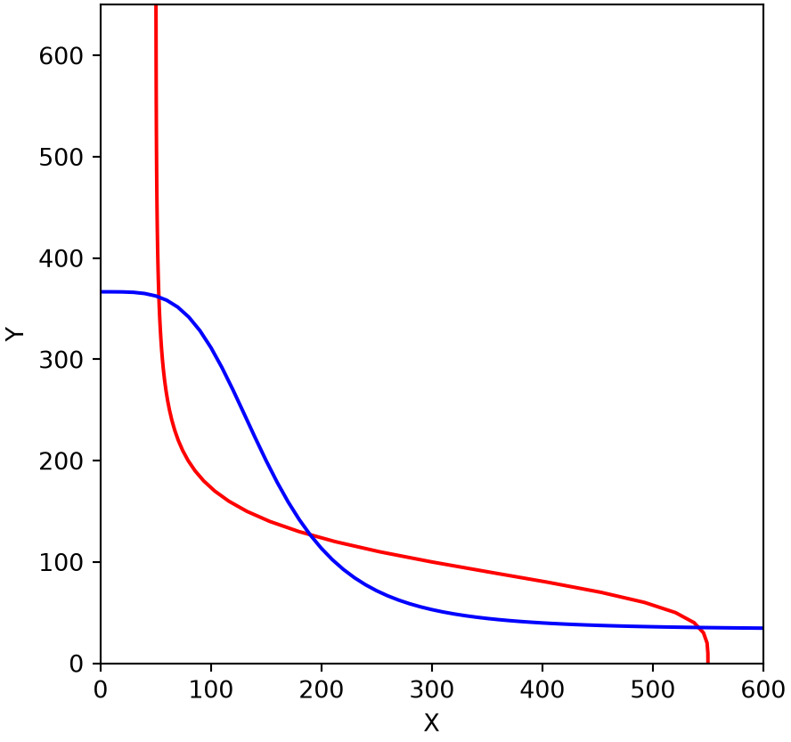
3A.6 Numerical continuation
The third option is numerical continuation, the arc-length predictor-corrector of Part 2F. Tracing the nullcline \(f_X(X, Y) = 0\) is the same problem as tracing a bifurcation curve: we treat \(Y\) as the control parameter and follow \(X(Y)\), stepping along the curve by arc length and correcting each step back onto it with Newton’s method. The corrector needs the partial derivatives \(\partial f/\partial X\) and \(\partial f/\partial Y\) (the Jacobian). The code below adapts the 2F routine to two variables; because the method is identical to 2F, the Python implementation is omitted (see Part 2F).
NoteRecipe 3A.6.1
Objective. Trace a nullcline by following it as a curve, when neither separation nor a grid contour is convenient.
Model. Genes X and Y repress each other; each gene’s transcription is a basal rate plus a repressive Hill function of the other, with linear degradation: dX/dt = gX0 + gX1/(1 + (Y/Yth)^nY) - kX*X, dY/dt = gY0 + gY1/(1 + (X/Xth)^nX) - kY*Y.
Method. Arc-length numerical continuation (predictor-corrector): treat Y as the control parameter, follow X(Y) along fX(X,Y) = 0, stepping by arc length and correcting back with Newton’s method using the Jacobian.
Test. The toggle switch’s X-nullcline fX(X,Y) = 0, with gX0 = 5, gX1 = 50, Yth = 100, nY = 4, kX = 0.1; gY0 = 4, gY1 = 40, Xth = 150, nX = 4, kY = 0.12.
Show. A phase-plane plot of the X-nullcline traced by continuation.
Verification. The traced curve matches the nullcline found by the other two methods.
R implementation
# f_X, f_Y and their partial derivatives (Jacobian entries)
f_null1 <- function(X, Y) 5 + 50 * hill_inh(Y, 100, 4) - 0.1 * X # f_X
dfdX_null1 <- function(X, Y) -0.1
dfdY_null1 <- function(X, Y) { u <- (Y / 100)^4; -200 / Y * u / (1 + u)^2 }
f_null2 <- function(X, Y) 4 + 40 * hill_inh(X, 150, 4) - 0.12 * Y # f_Y
dfdX_null2 <- function(X, Y) { u <- (X / 150)^4; -160 / X * u / (1 + u)^2 }
dfdY_null2 <- function(X, Y) -0.12# Newton corrector (1D in X at fixed Y); stops if X leaves X_range (as in Part 2F)
find_root_Newton <- function(X, func, dfunc, X_range, error = 1e-3, ...) {
f <- func(X, ...)
while (abs(f) > error) {
X <- X - f / dfunc(X, ...)
if ((X - X_range[1]) * (X - X_range[2]) > 0) break
f <- func(X, ...)
}
X
}
# 1D RK4 run to steady state, used to land the first point on a nullcline
RK4_1D_steady <- function(derivs, X0, t.total, dt, ...) {
X <- X0; t <- 0
while (t <= t.total) {
df <- derivs(X, ...)
if (abs(df) < 1e-8) break
k1 <- dt * df
k2 <- dt * derivs(X + k1 / 2, ...)
k3 <- dt * derivs(X + k2 / 2, ...)
k4 <- dt * derivs(X + k3, ...)
X <- X + (k1 + 2 * k2 + 2 * k3 + k4) / 6
t <- t + dt
}
X
}# arc-length continuation of a nullcline: step in (X, Y), Newton-correct in X
nullcline_numcont <- function(func, dfdX, dfdY, X_range, Y_range,
X_init, Y_init, direct = 1, step_arc = 3) {
nmax <- 10000
results <- matrix(NA, nrow = nmax, ncol = 2)
step_Y_prev <- direct; step_X_prev <- 0
X_new <- X_init; Y <- Y_init
cycle <- 1
results[cycle, ] <- c(X_new, Y)
while ((X_new - X_range[1]) * (X_new - X_range[2]) <= 0 &&
(Y - Y_range[1]) * (Y - Y_range[2]) <= 0 && cycle < nmax) {
h <- -dfdY(X_new, Y) / dfdX(X_new, Y) # dX/dY along the curve
step_Y <- step_arc / sqrt(1 + h^2) # arc-length step (Part 2F, Eq 7)
step_X <- step_Y * h
if (step_Y_prev * step_Y + step_X_prev * step_X < 0) { # keep travel direction
step_Y <- -step_Y; step_X <- -step_X
}
step_Y_prev <- step_Y; step_X_prev <- step_X
Y <- Y + step_Y
X_new <- find_root_Newton(X_new + step_X, func, dfdX, X_range, Y = Y) # correct in X
cycle <- cycle + 1
results[cycle, ] <- c(X_new, Y)
}
na.omit(results)
}
X_range <- c(0, 600); Y_range <- c(0, 650)
# land a starting point on each nullcline, then trace it
X0_null1 <- RK4_1D_steady(f_null1, X0 = 500, Y = 1, t.total = 1000, dt = 0.01)
null1_cont <- nullcline_numcont(f_null1, dfdX_null1, dfdY_null1, X_range, Y_range,
X_init = X0_null1, Y_init = 1, direct = 1)
X0_null2 <- RK4_1D_steady(f_null2, X0 = 1, Y = 366.6, t.total = 1000, dt = 0.01)
null2_cont <- nullcline_numcont(f_null2, dfdX_null2, dfdY_null2, X_range, Y_range,
X_init = X0_null2, Y_init = 366.6, direct = -1)
par(pty = "s") # square phase plane
plot(NULL, xlab = "X", ylab = "Y", xlim = X_range, ylim = Y_range)
points(null1_cont[, 1], null1_cont[, 2], pch = 1, cex = 0.3, col = 2)
points(null2_cont[, 1], null2_cont[, 2], pch = 1, cex = 0.3, col = 4)
legend("topright", inset = 0.02, legend = c("dX/dt=0", "dY/dt=0"), col = c(2, 4), lty = 1, cex = 0.8)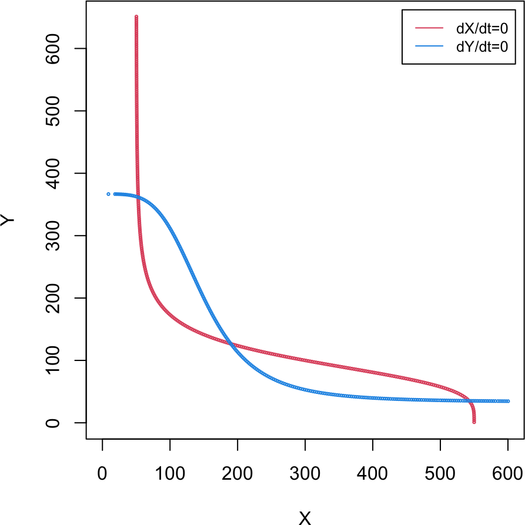
The continuation reproduces the same two nullclines as separation of variables and the contour method. It is more code, since it needs a starting point on each curve, the travel direction, and the Jacobian, and (as written) it has no guard against a diverging Newton step. The advantage, as in Part 2F, is that it applies to nullclines that cannot be solved analytically. All three methods feed the same next step: Part 3B locates the nullcline intersections to find the steady states and classify their stability.